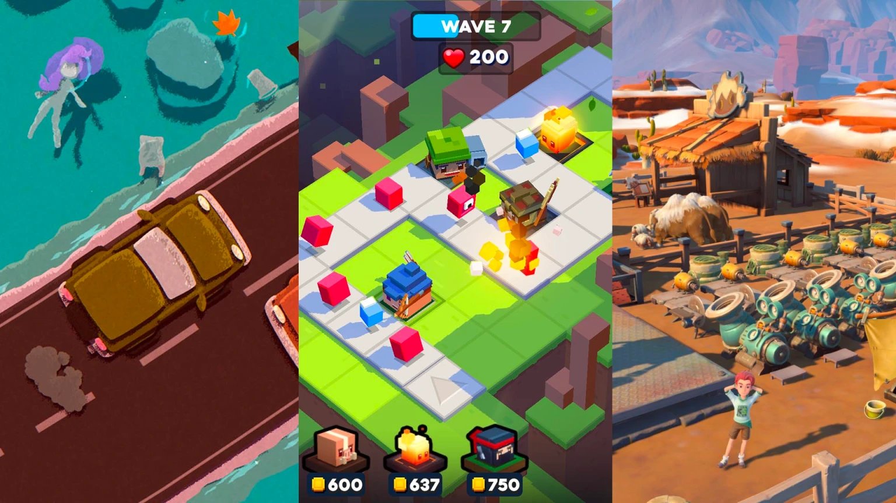

- Home
- About
- BY GENRE
- Top Action Games
- Top Adventure Games
- Top Casual Games
- Top Music Games
- Top Racing Games
- Top Roleplaying Games
- Top Simulation Anime
- Top Strategy Games
- BY PLATFORM
- Top PC Games
- Top Console Games
- Top Android Games
- Top iOS Games
CATEGORIES

TOP ACTION GAMES
There are few things more thrilling than an action game. The genre thrived in 2022, with countless excellent entries across the board, each with a distinct style and premise. Some were more combat-heavy, while others leaned into puzzles or RPG mechanics. These are our picks for the 10 best action games of 2022.

TOP ADVENTURE GAMES
New to the adventure genre (or returning after a hiatus) and wondering what fantastic new games await you? You're in the right place! Adventure games have a special place in gamers' hearts for their immersive, thrilling experiences that transport players away from reality. If you're eager to dive into the best adventure games of 2022, look no further than our carefully curated list!

TOP CASUAL GAMES
There are plenty of big-budget, expansive games to get stuck into. But we don’t always have hours of uninterrupted free time in our day. Sometimes you want something a little more flexible, a game that’s easily digestible in small chunks without having to commit too much. So, here’s a round-up of the most interesting casual experiences from 2022.

TOP MUSIC GAMES
Music games are a staple for every generation. Music already plays a large role in other genres, but here, every note, beat, and crescendo is central to the experience. Whether you enjoy the music itself, or testing your own rhythm as you go, there are plenty of games out there.

TOP RACING GAMES
There is a great variety of new racing games fans can try to test their skills and patience. Gaming fans with a deep love for speed and competition can find impressive and innovative racing games with futuristic graphics but can also find creative underrated racing games that'll challenge them in surprising ways.